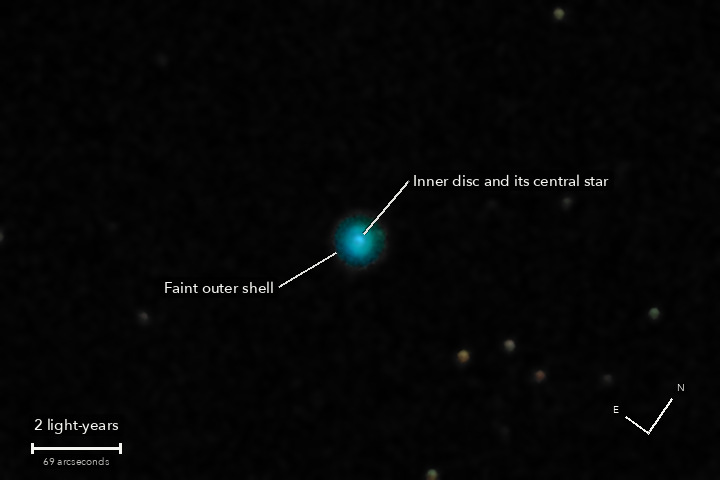

NGC 1535
Cleopatra's Eye, a planetary nebula in Eridanus
This is what a star like the Sun does at the end: it puffs its outer layers off into space, and the bare, hot core left behind makes them glow. The bright middle of the disc is that core, on its way to becoming a white dwarf; the faint shell round the disc is gas the star threw off earlier. William Herschel found it in 1785.
What you are looking at

Swipe sideways to see the rest. Tap the picture for full size.
- Distance
- Roughly 6,000 light-years (not well known: estimates run from 5,000 to 7,500)
- This picture spans
- 16 light-years; the nebula with its faint shell is nearly 2 across, the bright disc about two thirds of one
- The light left
- Roughly 6,000 years ago, before the pyramids and probably before writing
- Honest note
- The nebula glows in a blue-green from oxygen that is purer than any screen can show, so the screen's nearest colour stands in for it
Photography notes
30 of 33 frames of 4 s. Two minutes of light, low in the sky: the softest picture of the night.
Equipment
- Telescope
- Celestron 8SE Schmidt-Cassegrain: 203 mm aperture, 2,081.2 mm focal length by plate solve of this stack, f/10.3
- Camera
- Sony a6000, stock, at prime focus: APS-C 23.5 x 15.6 mm, 6000 x 4000, 3.9 micron pixels, RAW
- Mount
- Sky-Watcher EQ6-R, unguided. Set down without polar alignment, about 5 degrees off the pole; aligned from four plate-solved photos (about 1 arcminute), both axes driven from that model
Acquisition
- Exposures
- 30 x 4 s at ISO 1600: 120 seconds. Nothing clipped: the nebula peaks at 3 percent of the range in a 4 s frame
- Frames
- 33 taken, 30 kept. One was taken while the mount was still re-centring after the telescope's computer was restarted mid-run; one had soft stars (6.55 arcsec against a limit of 6.5); one was trailed. The frames came in two runs either side of the restart, 17 and 13 kept, with the nebula in two different places on the sensor
- Sampling
- 0.777 arcsec per pixel: one pixel per 2 x 2 colour cell, never enlarged. Stars 5.8 arcsec wide (half-flux): the softest picture of the night, because it was the lowest
- Field
- 9.3 x 6.2 arcmin: a 720 x 480 crop round the nebula, turned by quarter turns only (no resampling after the stack). North 36 degrees clockwise of up
- When
- 13 October 2026, after midnight, over 17 minutes. About 40 degrees up
- Calibration
- No darks and no flat frames were taken. Divided by the night's flat, built from the open sky of the NGC 891 run. This run's own sky is too faint in 4 s to check dust near the nebula; the odd and the even frames, each with frames of both runs, agree to 1 percent on the nebula. Hot pixels from the run itself (690 to 760 per colour plane)
Processing
- Registration
- Rotation and shift on 35 to 70 stars; the field turned 0.38 degrees. The air is a prism this low: red and blue star images sat 0.79 arcsec apart, measured on 22 stars and taken out in the one resampling (0.02 left). For the nebula's own light, which is not starlight, blue is still about 0.15 arcsec off
- Stacking
- RAW colour planes (no demosaic), hot pixels by 3 x 3 median, registered on stars with rotation, sigma-clipped weighted mean. One sky constant per colour per frame; in the picture only, a sky plane per colour, under 1.5 DN across it
- Colour
- The camera's daylight white balance and colour matrix, no saturation added. The nebula shines mostly in doubly ionised oxygen at 501 nm, a green-blue outside what a screen can show: the matrix gives it a negative red, which is shown as zero across the disc. That is the colour space, not the sensor
- Finish
- Brightness smoothed 1 px, colour 3.5 px, arcsinh stretch. Black at the 60th percentile, S-curve 0.15. Dark sky smoothed (median 3 px, bilateral 4 px) but kept below the shell on purpose: the shell's outer edge is grainy at full size, which is the stack's own noise
- Picture size
- 720 x 480 pixels
- Software
- Capture and mount: Observatory (Elixir on a Raspberry Pi 3). Stacking: numpy, OpenCV, rawpy. Plate solving: astrometry.net. Stacked from the camera's RAW frames. Nothing generated.
What the picture shows
- What is real
- The blue-green inner disc. The central star, as a star-wide bright core in the middle of it. The faint outer shell: in the ring 14 to 25 arcsec out the green light is 10.0 DN where the disc's own blur would leave 2.2, 73 times the noise, and the odd and the even frames each show it (55 and 65 times). The light ends 28 to 34 arcsec from the centre
- Not seen
- Any structure inside the disc, or a sharp edge between disc and shell: with stars 5.8 arcsec wide the two run into each other. A small brighter spot in the shell about 17 arcsec out repeats in both halves and is not identified
Everything above as Markdown, ready to paste into a forum post.
© 2026 Brad Gessler · Celestron 8SE (8 inch, f/10.3) and Sony a6000 on an EQ6-R · San Francisco Bay Area · night of 12 October 2026
© 2026 Brad Gessler. The pictures and the words are his own; all rights reserved.